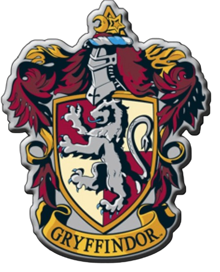

Grifinória, fundada por Godrico Gryffindor, é uma das quatro casas da Escola de Magia e Bruxaria de Hogwarts. Suas cores são o escarlate e o ouro e seu animal emblemático é um leão. Principais características: Coragem, Cavalheirismo, Ousadia, Lealdade e Determinação.
 Voltar para o Chapéu Seletor